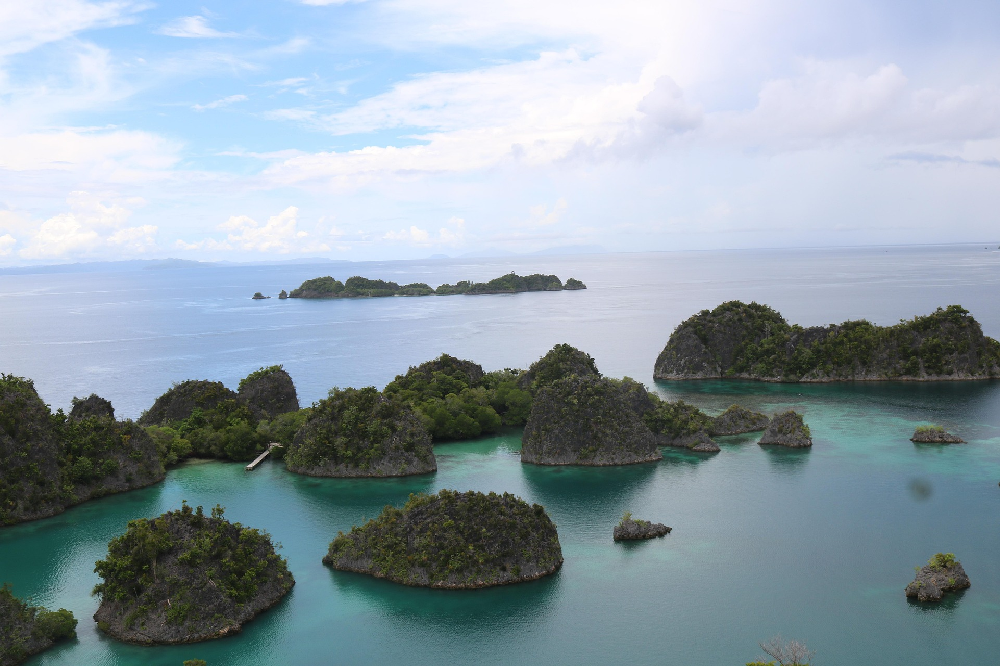
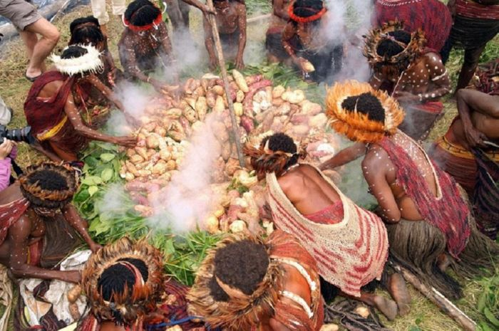
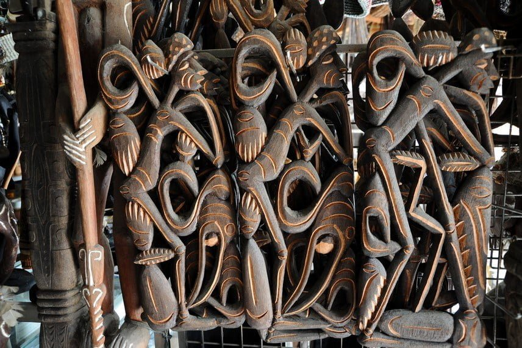
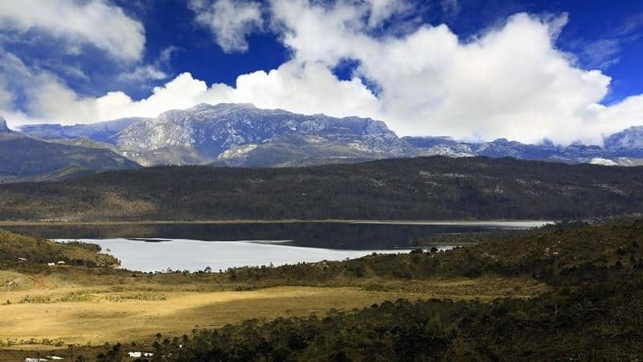
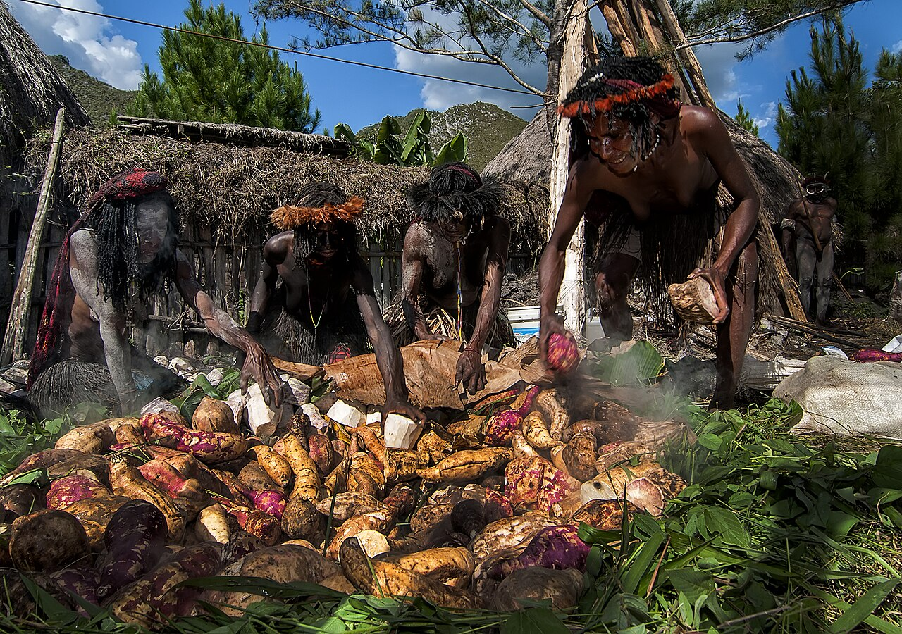
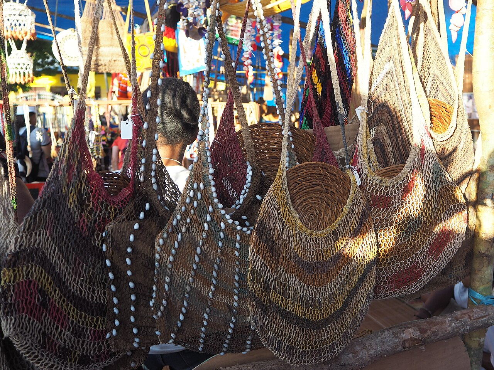
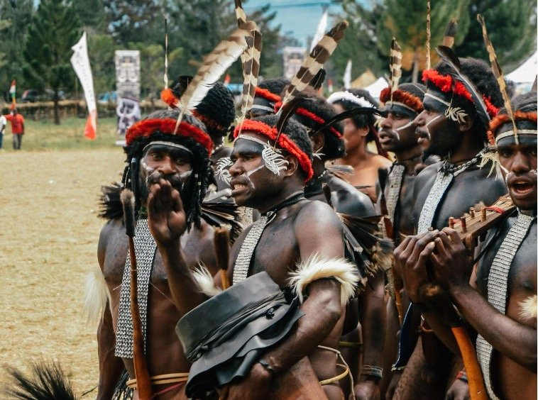

Timur Indonesia · Tanah yang Agung
Jelajahi kekayaan budaya, tradisi, dan seni yang telah diwariskan oleh ratusan suku di bumi Papua selama ribuan tahun.
Mulai Jelajahi
Upacara adat, ritual suku, dan filosofi hidup yang menyatu dengan alam Papua.
Jelajahi Budaya →
Ukiran Asmat, lukisan kulit kayu, tari-tarian sakral, dan musik tradisional.
Lihat Seni →// Tentang Papua

Papua adalah pulau terbesar kedua di dunia, dengan keanekaragaman budaya yang tak tertandingi. Di sini hidup lebih dari 300 suku bangsa dengan bahasa, tradisi, dan sistem kepercayaan masing-masing.
Setiap lembah, sungai, dan hutan di Papua menyimpan cerita yang telah terjalin selama ribuan generasi, warisan yang terus dijaga oleh para penjaganya.
"Tanah Papua adalah halaman terakhir dari buku alam semesta yang belum terbaca."- Kearifan Lokal Papua
// Sorotan

Tradisi
Ritual memasak bersama sebagai simbol persatuan dan syukur kepada alam, dilakukan suku-suku di Pegunungan Tengah.

Kearifan Lokal
Tas rajut tradisional Papua yang diakui UNESCO sebagai Warisan Budaya Takbenda Dunia sejak 2012.

Seni Pertunjukan
Tarian heroik yang menggambarkan semangat perjuangan dan keberanian leluhur Papua dalam menjaga tanah adat.